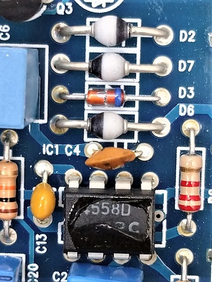
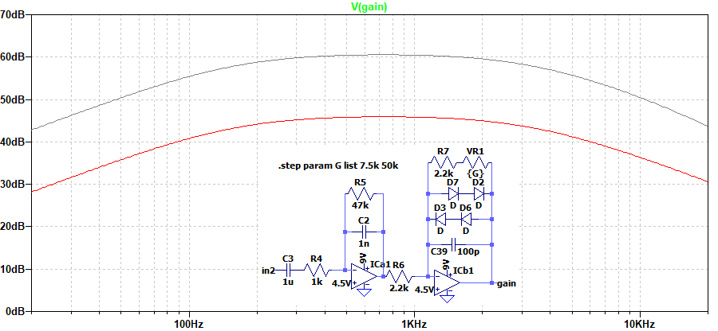

FREE THE TONE IRON FOREST IF-1D 解析
2023年08月25日 カテゴリー：修理・改造・解析
FREE THE TONEはプロミュージシャンの機材で目にすることが多いメーカーです。今回は生産終了品のIRON FORESTを中古で入手し解析しました。KiCadとLTspiceの回路図データはGitHubにあります。

4つのクリッピングダイオードのうち、D3は1S1588のような外観で、おそらく小信号用汎用ダイオードです。D2、D6、D7はあまり見かけないSOD-57というパッケージで、マーキングがないため型番を特定するのはあきらめました。順方向電圧VFを測定すると、1N4148の0.64Vより少し小さい0.60Vと出ました。端子間容量は、LCRメータでを測定すると1nF程度となりうまくいきませんでしたが、周波数特性から推定すると数十pF程度ありそうです。
オペアンプはホットボンドのようなものが付いていましたが、爪で簡単に剥がすことができました。NJM4558Dという一般的なオペアンプが使用されています。同時発売のGIGS BOSONも同様です（参考ページ→FREE THE TONE GIGS BOSON GB-1Vの修理）。特に隠す必要はないように思いますが……
▽回路図
歪みの回路はシンプルなオペアンプの反転増幅です。LEDインジケーターは電源電圧が約5.5V以下で消灯するようになっています。バイパスはバッファと機械式スイッチを使った方式で、HTSサーキットと命名されています。フリーザトーン代表 林氏のブログに開発秘話が掲載されていますので、併せてご参照ください。
・GIGS BOSON & IRON FOREST開発秘話(1)
・GIGS BOSON & IRON FOREST開発秘話(2) 設計姿勢とHTSサーキット
・GIGS BOSON開発秘話(3)
・IRON FOREST開発秘話(4)
- 入力バッファ
PETE CORNISHのバッファと同様のの回路です。C14による正帰還をかけることにより、入力インピーダンスを高くすることができます（参考ページ→ブートストラップがあるエミッタ・フォロワの特性）。シミュレーションしてみると、Q1のhFEによって入力インピーダンスが変化するようで、注意が必要かと思います。また、バイアス電圧が7.3Vなので許容入力電圧があまり大きくありません。
▽シミュレーション
- 増幅部

低音域のカットが比較的少ないです。IRON FOREST開発秘話(4)にあるように、FUZZっぽいサウンドを出すのに適していると考えられます。
- BASS TREBLE 各0%→50%→100%
James EQと呼ばれるパッシブトーン回路の形です。Baxandall（BAX型）トーン回路とは違い、増幅と減衰が対称的になりません。BASS 50% TREBLE 50%では、中音域がカットされる状態になっています。